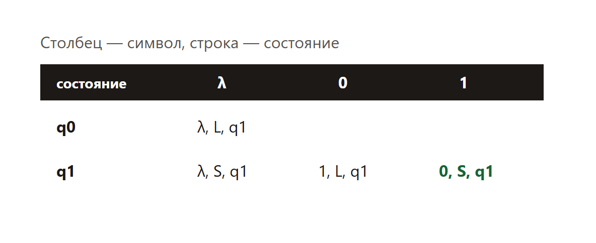
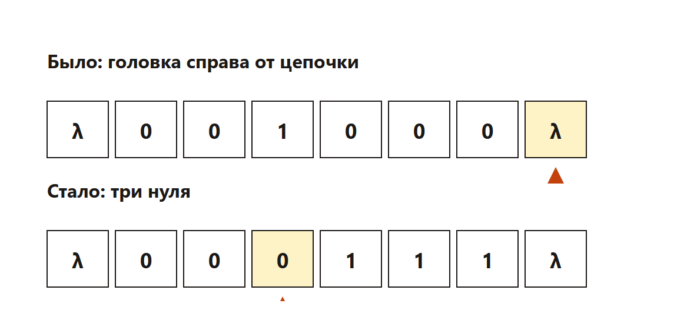

В демоверсии 2026 года это лента и головка. Лента разбита на клетки. В каждой клетке один символ. Головка смотрит на одну клетку и за один шаг делает три дела: что записать, куда сдвинуться, в какое состояние перейти.
Команды лежат в таблице: строка — состояние, столбец — символ в клетке.

Головка начинает справа от цепочки, в пустой клетке, в состоянии q0. Она шагает влево. Пока видит 0, пишет 1 и идёт дальше влево. Как только видит 1, пишет 0 и останавливается.
На ленте 0 0 1 0 0 0. После работы должно остаться 3 нуля. Проверим руками.

На ленте остаётся 0 0 0 1 1 1. Нулей три. В исходной цепочке нулей было пять.
После работы на ленте ровно 343 нуля. Какое наибольшее число нулей могло быть в исходной цепочке из 1000 символов?
Решение. Оставшиеся нули — это нули слева от первой единицы, которую головка встретила, плюс сама эта единица: её заменили на ноль.
Ответ: 999.
В других вариантах исполнитель заменяет кусок строки на другой. Читают команды сверху вниз и считают, сколько символов осталось. В 2026 году в демоверсии разбирают именно ленту.
Программа повторяет таблицу команд этого урока. Головка смотрит на правый символ. Ноль она меняет на единицу и шагает влево. Единицу меняет на ноль и останавливается.
Для длинной ленты из демоверсии отдельная арифметика: один символ обязан быть той единицей, на которой остановились. Поэтому максимум исходных нулей — на один меньше длины.
Каждый фрагмент запускается отдельно. В конце он печатает ответ. Комментарии на русском говорят, какая строка за что отвечает.
def run(chain):
tape = list(chain)
i = len(tape) - 1 # головка пришла справа и смотрит на последний символ
while True:
if tape[i] == "0":
tape[i] = "1" # ноль -> единица, идём дальше влево
i -= 1
else:
tape[i] = "0" # единица -> ноль и стоп
break
return "".join(tape)
result = run("001000") # МЕНЯТЬ: лента
print(result.count("0"))Что менять, если условие другое.
Программа печатает 3.
length = 1000 # МЕНЯТЬ: длина цепочки
# Один символ обязан быть той единицей, на которой головка остановилась.
print(length - 1)Что менять, если условие другое.
Программа печатает 999.
left_zeros = 343 # МЕНЯТЬ: сколько нулей осталось
# Один из оставшихся нулей — это остановка (единицу заменили на ноль).
print(left_zeros - 1)Что менять, если условие другое.
Программа печатает 342.